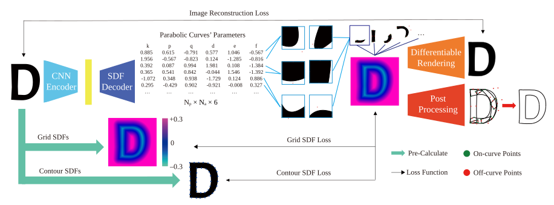
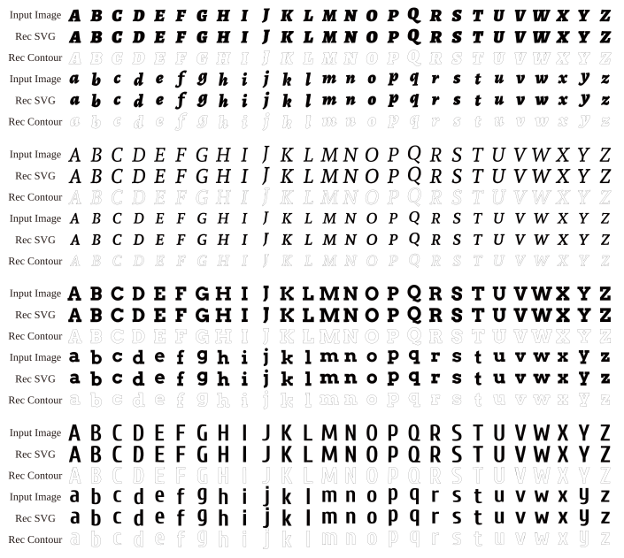
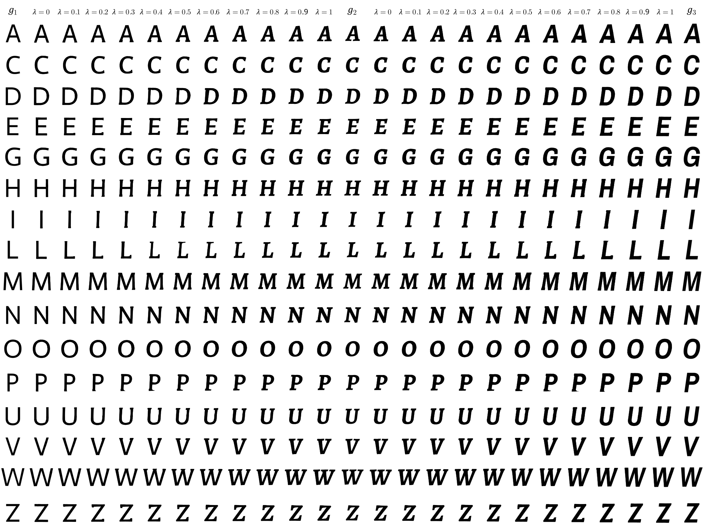
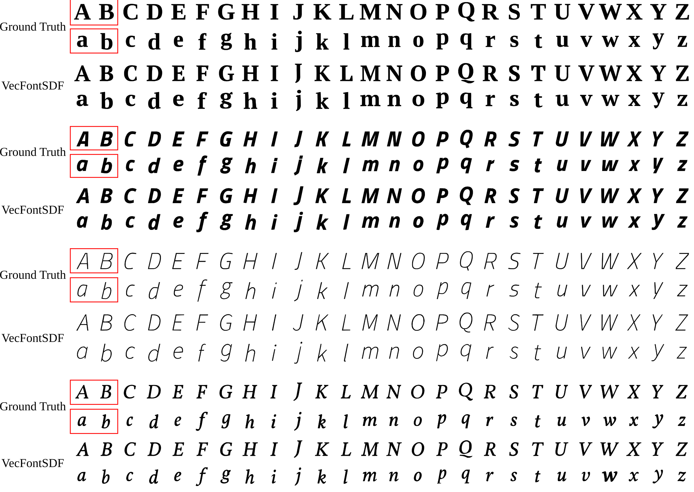

Abstract
Font design is of vital importance in digital content design and the modern printing industry. Developing algorithms capable of automatically synthesizing vector fonts can significantly facilitate the font design process. However, existing methods mainly concentrate on raster image generation, and only a few approaches can directly synthesize vector fonts. This paper proposes an end-to-end trainable method, VecFontSDF, to reconstruct and synthesize high-quality vector fonts using signed distance functions (SDFs). Specifically, based on the proposed SDF-based implicit shape representation, VecFontSDF learns to model each glyph as shape primitives enclosed by several parabolic curves, which can be precisely converted to quadratic Bézier curves that are widely used in vector font products. In this manner, most image generation methods can be easily extended to synthesize vector fonts. Qualitative and quantitative experiments conducted on a publicly available dataset demonstrate that our method obtains high-quality results on several tasks, including vector font reconstruction, interpolation, and few-shot vector font synthesis, markedly outperforming the state of the art.
Method

Results
Reconstruction

Interpolation

Few-shot Generation

BibTeX
@InProceedings{Xia_2023_CVPR,
author = {Xia, Zeqing and Xiong, Bojun and Lian, Zhouhui},
title = {VecFontSDF: Learning To Reconstruct and Synthesize High-Quality Vector Fonts via Signed Distance Functions},
booktitle = {Proceedings of the IEEE/CVF Conference on Computer Vision and Pattern Recognition (CVPR)},
month = {June},
year = {2023},
pages = {1848-1857}
}